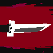
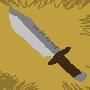
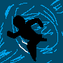
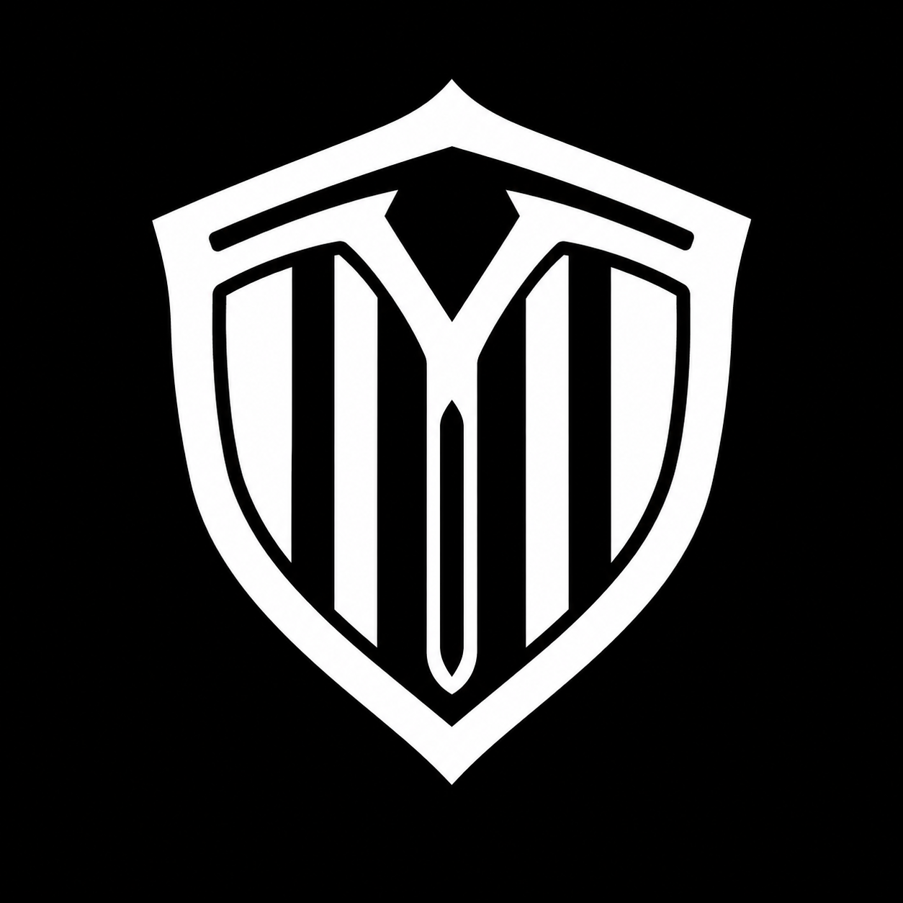
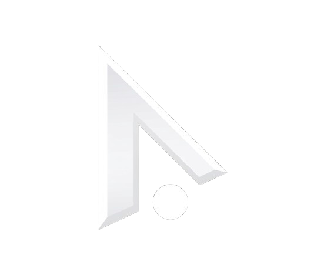

쿨타임 옵션
▾
쿨타임 감소
-
0
+
감소율: 0%
쿨초기화 모드: OFF
기본 단축키는 ~(물결표)
궁극기만 쿨타임초기화
블링크만 쿨타임초기화
능력치 옵션
▾
공격속도
-
1.08
+
비색단검 (공속 +0.21)
더미 옵션
▾
더미 생성
더미 삭제
버튼 클릭 후 좌클릭한 위치에 적용
움직이는 더미
더미가 랜덤한 방향으로 돌아다닙니다
콤보 가이드
▾
● 녹화
▶ 재생
배속
1x
0.5x
0.3x
📋 공유 코드
녹화 후 코드로 공유 · 고스트로 재생
7단비약
9단비약
12단비약
버튼을 누르면 예시 콤보 쉐도우 재생
⚙ 설정
0
Q

W
E
R
D

F

스킬이 아직 준비되지 않았습니다!
문제 1
비약 적중 0 / 3
준비하세요
0.00
공속 1.29 · 쿨감 50% 고정
🏆 챌린지 클리어!
0.00초
기록 등록
— 랭킹 TOP 10 —
다시 도전
로비로
본 사이트는 님블뉴런 IP에 위배되지 않는 선에서 제작되는 2차 창작 사이트입니다.
원작과 다른 점이 있다면 피드백해주세요!
Thanks to..
(테스트 해주신 분들)
쿠온우횬, 정선우123, 지존똥, 칼챔충, 루미널
닫기
⚙ 설정
스킬 이후 자동평타
끄면 W 착지 · R 적중 · 은신 공격 후 자동평타가 나가지 않습니다
마우스 반전
좌클릭 이동·공격 명령 / 우클릭 평타
D/F 위치 변경
은신과 블링크의 키가 바뀌고 하단 아이콘 순서도 바뀝니다
플레이어 이동 공격 클릭
비활성화 시 a키를 누르면 바로 평타가 나갑니다
원작 입력 지연 재현
원작처럼 핑·서버 처리 지연을 흉내내 조작감을 게임과 일치시킵니다 (끄면 즉발)
지연
65ms
화면 흔들림
스킬 적중 시 화면이 흔들립니다
비약 피격판정 표시
비약(W)의 단검 회수 경로·피격 판정 범위를 표시합니다
카메라 고정 모드
마우스를 화면 가장자리로 밀어도 카메라가 움직이지 않습니다
마우스 감도
마우스 고정(게임 중) 상태에서 적용 · 1.0 = 시스템 커서와 동일
마우스 원시 입력 (순간이동 방지)
OS 가공을 거치지 않은 마우스 신호를 직접 사용해 커서 순간이동(스파이크)을 차단합니다. 감도가 미세하게 다르게 느껴지면 위의 마우스 감도로 보정하세요
사운드 볼륨
100%
FPS 제한
30
60
120
144
무제한
게임 로직·렌더링 프레임 상한 · 커서는 제한과 무관하게 항상 부드럽게 움직입니다
스킬 키 변경
초기화
표리
Q
비약
W
협상
E
무자비
R
카메라 키 변경
초기화
중앙이동
Space
고정토글
Y
중앙이동: 카메라를 캐릭터로 (누르는 동안 추적) / 고정토글: 카메라를 캐릭터에 고정
버튼 클릭 후 원하는 키 입력 (ESC 취소)
닫기
📋 콤보 공유 코드
내 녹화 코드 (복사해서 공유)
코드 복사
받은 코드 불러오기 (붙여넣고 불러오기)
불러오기
닫기
⚠ 안내
원작과 동일한 단검 위치를 위해
F11키
를 눌러 전체화면으로 이용해주세요!
Microsoft Edge 브라우저를 사용하신다면
'마우스 제스처'
기능을 비활성화해주세요.
(우클릭 드래그가 제스처로 인식되어 탭이 닫힐 수 있습니다)
하루동안 다시 보지 않기
확인

쇼이치 시뮬레이터
이터널리턴 쇼이치 연습 시뮬레이터
게임 시작
더미 처치 챌린지
연막무스 파훼 시뮬레이터
V자 각 퀴즈
쇼이치 시뮬레이터 v1.7 업데이트 내역
ⓘ 본 사이트는 (주)님블뉴런의 '이터널리턴'을 바탕으로 제작된 2차 창작 사이트입니다.
계속하기
설정
로비로 돌아가기
